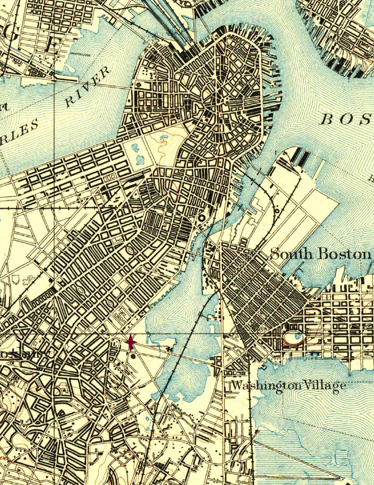

route 1

Map of Boston, 1893, Historical Topographic Map Collection, courtesy of the U.S. Geological Survey
- Begin at the intersection of Massachusetts Avenue and Southampton Street.
- Walk down Southampton St, in a South-West direction, away from the large intersection.
- Continue until you reach the shore of South Bay. Looking out over the Bay, the marshland bordering it to the South is lush and untamed; small boats populate the waters.
- Walk out onto a dam separating the Bay straight through the middle, taking in the scents of the sea in the air. Follow along, until you finally meet the railroad almost exactly in the center of the Bay, where the rails run perpendicularly to the dam carrying the path.